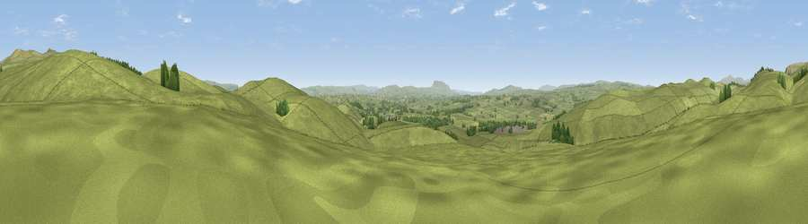

Viewpoint near Long Preston
#19034 in England · top 42% of its area beats it · near Long PrestonThe view, rendered

A 360° render of this exact spot computed from the terrain model, tree cover and land cover — summer colours, afternoon light, calibrated against photographs of famous viewpoints. Real trees, hedges and buildings will differ in detail.
The panorama
Grey silhouette: terrain skyline in each direction (720 bearings, Earth curvature and refraction included). Dashed green: skyline with trees (+15 m) and buildings (+8 m) as obstacles. Blue strip: how far the ground is visible on each bearing.
Where the view opens
Wedge length = distance to the farthest visible ground on that bearing (vegetation-aware). Rings at 10, 25 and 50 km.
What fills the view
96% grassland · 3% woodland ·
Angular shares of the visible panorama (visual magnitude), not map area. Landscape diversity 0.09 (0–1 Shannon).
Key numbers
More beautiful places nearby
The staircase of upgrades: each row has a higher view potential than everything closer. Driving times are estimates from straight-line distance, calibrated against real road routing — check an actual route before setting out.
| Place | Direction | Drive | Score |
|---|---|---|---|
| Viewpoint near Long Preston | NNE · 1 km | ~2 min | 61.1 |
| Newton Moor Top | ESE · 1 km | ~3 min | 65.1 |
| Viewpoint near Settle | N · 3 km | ~8 min | 73.2 |
| Rye Loaf Hill | NNE · 4 km | ~10 min | 73.9 |
| Kirkby Fell | NNE · 5 km | ~11 min | 74.5 |
| Pen-y-ghent | N · 14 km | ~26 min | 75.8 |
| Little Ingleborough | NW · 18 km | ~31 min | 78.8 |
| Viewpoint near Ingleton | NW · 19 km | ~32 min | 79.5 |
54.03014, -2.23316 · source: screening · position refined by local search. Computed location — check access rights before visiting.